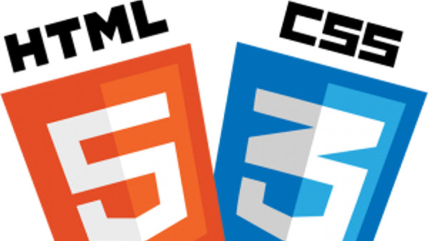
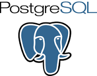

Skills






In my chess persuit, a partner said I would excel at web development. Both chess and web development are based on logic. Building a good app is like playing a chess game, it requires forethought, organization, and sometimes it may seem like little progress is being made but that's likely part of one of the most crucial steps! I want to develop because both chess and web development start with determination and have enjoyable payoffs the more one becomes skilled. The reason I develop is because I want to translate what is in my head to a website. This is easily said but not easily done. As I become more fluent in development languages, I see the payoff, akin to chess's, in the sense that enjoyment becomes more level with the initial determination. Though there is no ultimate level of development, more abilities come when I delve into programming and the desired result becomes more frequent.
Along with chess, I have enjoyed a similar field that shares skills with web development. I have taken classes in five languages (Spanish, French, Italian, Latin, and German). In fact, I lived in France with my family for four months in 2000. Being immersed in culture and language in France is similar to being a student at General Assembly. There is a deluge of unknown terms. However, every bit of language I acquired, both in France and GA, was put to use and was really appreciated because it enabled me to make new pathways and I saw the results immediately. It opened new windows to unforseen experiences and I plan to continue this pattern here in Boston.
phone: 617-681-4194
email: staley77@protonmail.com
linkedin: https://www.linkedin.com/in/jstaley77
github: github.com/logicmyth
resume: resume